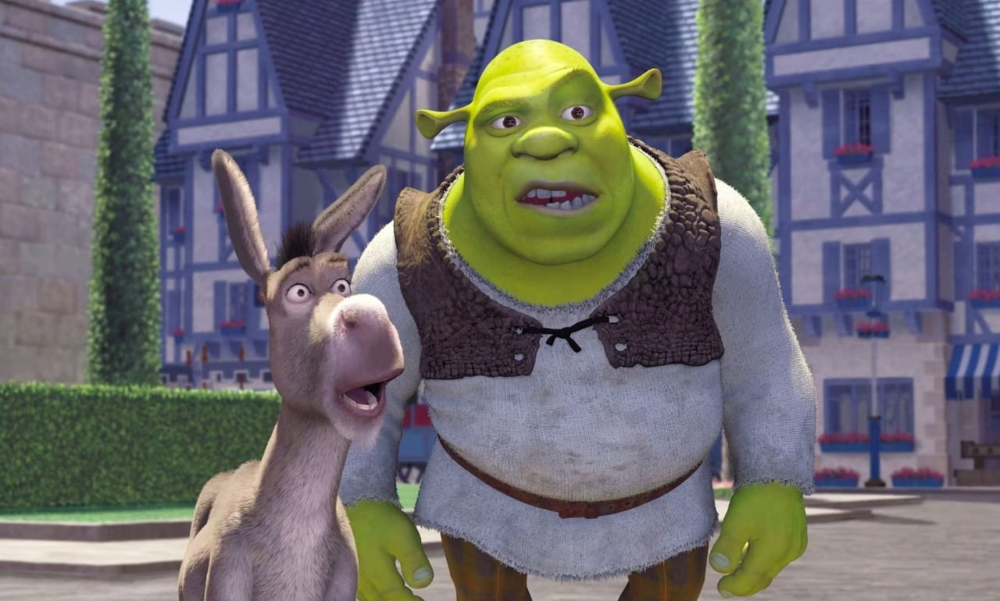
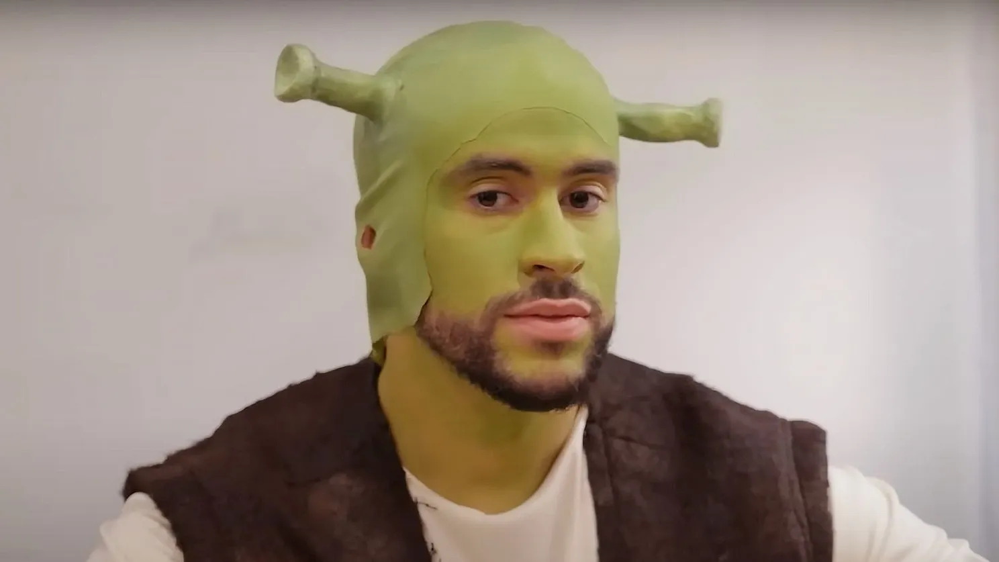

Menu
Fotos
Formulario
Secretos de Ogro


Muy fotogenico
Los envidiosos diran que es fotoshop.


 Esta pagina web ha sido creada para la asignatura de Diseño de interfaces, para el instituto IES Alvaro Falomir
Esta pagina web ha sido creada para la asignatura de Diseño de interfaces, para el instituto IES Alvaro Falomir